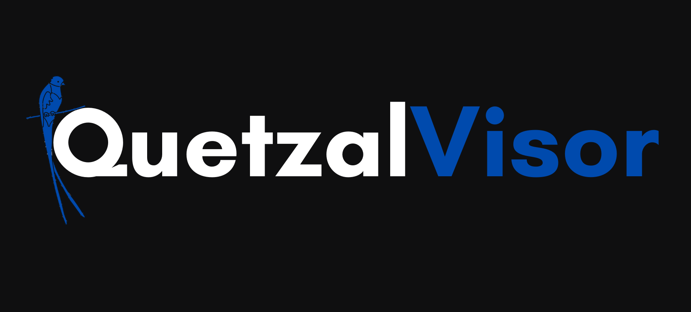
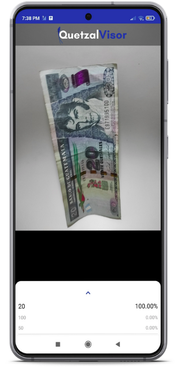

QuetzalVisor
Fácil de instalar, fácil de usar, con sonido de voz, sin necesidad de conexión a internet e ideal para personas con discapacidad visual.


Nuestra Solución
Es fácil de usar, no requiere configuraciones, ni conexión a internet, por lo cuál es muy portable en los dispositivos móviles android. El usuario solo debera enfocar el billete y al presionar en la parte superior de la app, un comando de voz, dirá el valor del billete correspondiente.
Guía de Instalación
Para poder instalar la aplicación debe seguir los siguientes pasos.
- Descarga la aplicación. Haz click aqui para descargar el apk.
- Buscar el archivo apk descargado e instalarlo.
- Abrir la aplicación. (Al abrir la app, le saldrá una solicitud de permiso para aceptar la cámara, aceptelo).
Guía de Uso
Para poder usar adecuadamente la aplicación y conseguir los mejores resultados considere lo siguiente:
- El billete debe estar colocado de forma paralela al telefono, tal y como se muestra en la imagen de abajo.
- Para un mejor reconocimiento el billete debe estar cerca de la cámara, la distancia depende de cada telefono. La distancia ideal sería donde se enfoca principalmente el rostro y la parte central del billete.
- Una vez encontrada la distancia ideal, se recomienda prácticar esto con la persona no vidente, para asegurarse que usea la distancia correcta y así logre un resultado confiable.
- Para escuchar el valor del billete reconocido, debe presionar en el logo de la aplicación que se encuentra en la parte superior de la pantalla. Asegurese que el dispositivo celular tenga el volumen multimedia suficientemente alto.